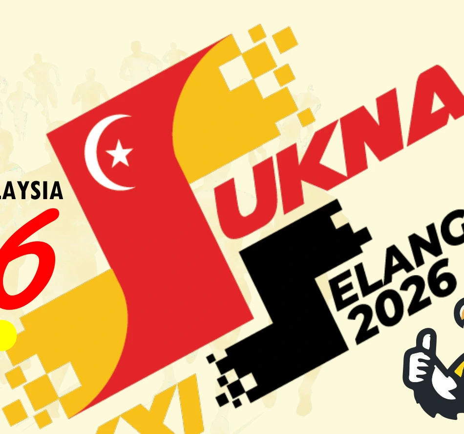
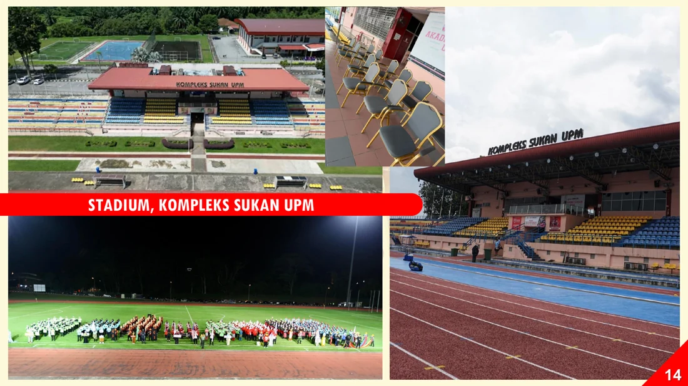
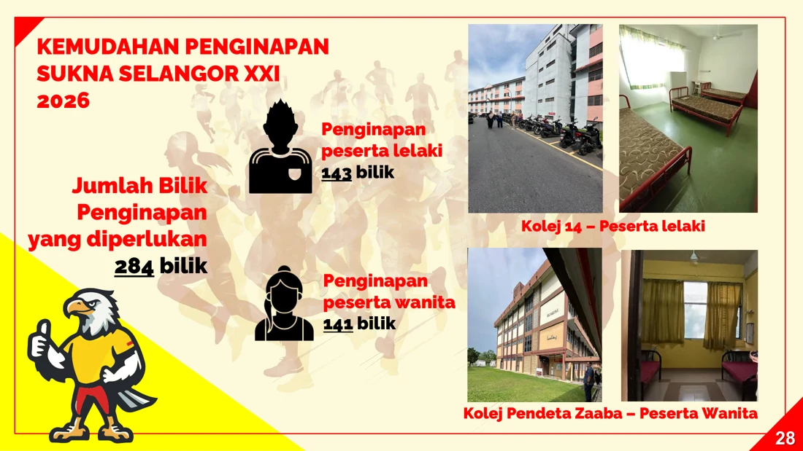
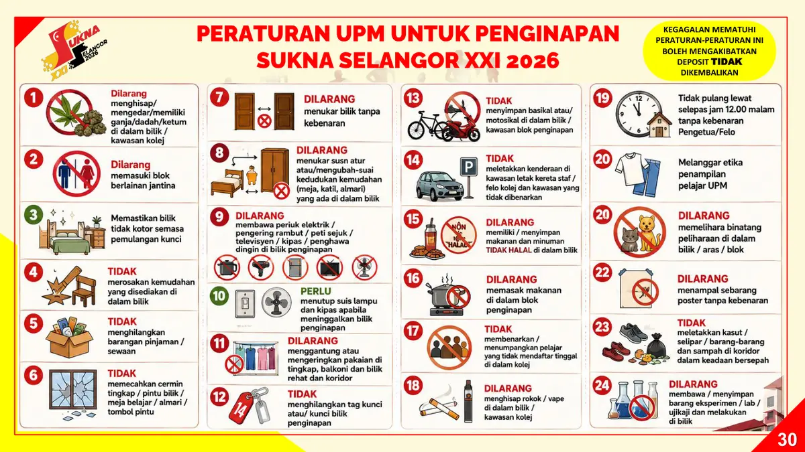
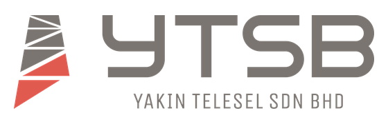
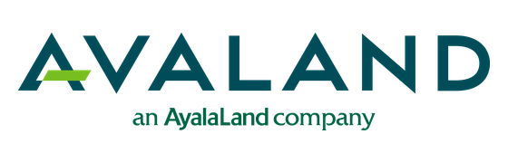

648Peserta
PORTAL UTAMA
SUKNA XXI
SUKNA XXI
Selangor 2026
Kejayaan Bersama, Semangat Juara

Sukan
Menyatukan
Kita!
Menyatukan
Kita!

Menuju SUKNA XXI Selangor 2026
00Hari
00Jam
00Minit
00Saat
“Lebih daripada sukan, membina semangat kebersamaan.”
6Kontinjen
20Pejabat
“Sukan memperkukuh ukhuwah, merancakkan kecemerlangan.”
Sukan Yang Dipertandingkan
Lihat Semua Sukan →
⚽Bola Sepak
🥅Bola Jaring
⚽Futsal
🏐Bola Tampar
🏸Badminton
🏓Ping Pong
🎯Dart
♟Karom
Sepak Takraw
🎳Boling
🪢Tarik Tali
🏃Olahraga
▣ Jadual Kejohanan
Lihat Semua →Pendaftaran PenginapanKolej 14 & Kolej Pendeta Za'aba
12.00 tgh - 5.00 ptg
Pendaftaran, Taklimat & PerasmianUPM · Majlis Perasmian di Stadium UPM
8.00 pg - 11.00 mlm
Pertandingan & Penyampaian MedalFutsal, Tarik Tali, Bola Sepak, Bola Jaring, Karom & Tenpin Bowling
6.00 pg - 11.00 mlm
Pertandingan, Final & MedalPing Pong, Badminton, Dart, Bola Sepak, Bola Tampar & Olahraga
6.00 pg - 10.30 mlm
Final, Medal & Majlis PenutupFinal sukan · Dewan Besar UPM
6.00 pg - 11.00 mlm
Daftar Keluar PenginapanKolej Penginapan UPM
8.00 pg - 12.00 tgh
● Venue Utama
Lihat Semua →
Universiti Putra Malaysia (UPM)Serdang, Selangor
▰ Penginapan
Lihat Semua →
Penginapan Peserta UPMKolej 14 & Kolej Pendeta Za'aba
- Berhampiran venue
- 284 bilik
- Dalam kampus
!
Semak Jarak Venue →
Tiada shuttle bus di dalam kampus.Peserta diminta merancang pergerakan sendiri antara penginapan dan venue.
PENYERTAAN
Kontinjen SUKNA XXI
Jumlah penyertaan mengikut zon seperti dalam dokumen rasmi kejohanan.
Penyertaan Mengikut Kontinjen
407 lelaki · 241 wanita
KEDUDUKAN SEMASA
Kutipan Pingat Keseluruhan
Kedudukan kontinjen mengikut kedudukan rasmi, jumlah medal dan jumlah mata yang dikemas kini oleh urus setia.
Emas0
Perak0
Gangsa0
Jumlah Medal0
Jumlah Mata0
Kedudukan KontinjenSusunan akan berubah secara automatik apabila kutipan pingat dikemas kini.
ATURCARA PENUH
16 - 21 September 2026
Jadual portal telah diselaraskan dengan Aturcara Penuh SUKNA Ke-21, termasuk pendaftaran, makan, rehearsal, pertandingan, final dan majlis rasmi.
Nota: Sebarang perubahan masa akan dimaklumkan oleh pihak urus setia dari masa ke semasa.
ACARA DIPERTANDINGKAN
Info acara & format pertandingan
Klik acara untuk format ringkas, bilangan pemain dan venue.
⌕
PELAN LOKASI
Pelan Rasmi
Venue utama SUKNA XXI
Tekan “Arah” untuk membuka carian lokasi terus di Google Maps.
Pergerakan dalam kampus
Rujuk jarak antara Akademi Sukan, kolej penginapan, Dewan Besar dan venue lain. Tiada shuttle bus disediakan di dalam kampus.
Buka carta jarak →PENGINAPAN PESERTA
284 bilik disediakan
Penginapan lelaki dan wanita ditempatkan di kolej berasingan di UPM.
♂Map ↗
♀Map ↗
⌂Map ↗
Kolej 14
Peserta lelaki
143 bilikKolej Pendeta Za'aba
Peserta wanita
141 bilikRumah Tamu UPM
Type A: 5 unit · RM85/malam
Type B: 4 unit · RM145/malam

PERATURAN KOLEJ
Jaga bilik, kemudahan & disiplin
- Dilarang dadah/ketum, merokok atau vape.
- Dilarang memasuki blok berlainan jantina.
- Dilarang memasak, menukar bilik atau mengubah susun atur perabot.
- Pastikan bilik bersih dan suis elektrik ditutup ketika keluar.
- Selepas 12.00 malam perlu kebenaran Pengetua/Felo.
Kegagalan mematuhi peraturan boleh menyebabkan deposit tidak dikembalikan.
Lihat 24 PeraturanPERATURAN AM
Rujuk Peraturan RasmiRingkasan penyertaan & pemarkahan
Untuk keputusan rasmi atau bantahan, rujuk syarat penuh kejohanan.
👤
Kategori Veteran
Lelaki: 40 tahun
Wanita: 35 tahun
🪪
Kategori Pegawai
Pegawai Gred 9 (41) dan ke atas.
🎯
Had Penyertaan
Setiap peserta: 2 acara sukan + 1 kategori olahraga.
🥇
Mata Pingat
Emas 12 · Perak 8 · Gangsa 4 · Penyertaan 1.
⚖️
Disiplin
Pelanggaran disiplin / salah laku: RM200.
📄
Yuran Bantahan
RM1,500 mengikut ketetapan dokumen rasmi.
GALERI & PROTOKOL
Rujukan operasi majlis
Susun atur, perbarisan, tempat duduk VVIP/VIP dan laluan ketibaan.
17 SEP
Majlis Perasmian SUKNA-21
Stadium UPM
- 8.00 malam - 11.00 malam
- Rehearsal majlis perasmian & perbarisan: 4.30 petang
- Makan malam: 6.00 petang - 8.00 malam di Khemah Makan, Perkarangan Akademi Sukan UPM
20 SEP
Majlis Makan Malam & Penutup SUKNA-21 Tahun 2026
Dewan Besar UPM
- Rehearsal penuh: 11.00 pagi
- Majlis makan malam & penutup: 8.00 malam - 11.00 malam
Pelan operasi & protokol
Klik imej untuk paparan penuh.
RAKAN PENAJA SUKNA XXI
Sekalung Penghargaan Kepada Rakan Penaja
Sokongan strategik rakan penaja menjayakan SUKNA XXI Selangor 2026.
OFFICIAL PARTNERS
Logo penaja rasmi dipaparkan mengikut kategori tajaan untuk memberi penghargaan yang lebih eksklusif dan menyerlah.
Platinum Sponsor
Kategori utama penaja strategik SUKNA XXI

Gold Sponsor
Rakan penaja premium yang menguatkan penganjuran kejohanan

Silver Sponsor
Penaja sokongan yang bersama menjayakan SUKNA XXI
INFO KECEMASAN
999Talian KecemasanSimpan nombor ini
Jarak dalam dokumen rasmi dikira dari Akademi Sukan UPM.
PAUTAN PENTING